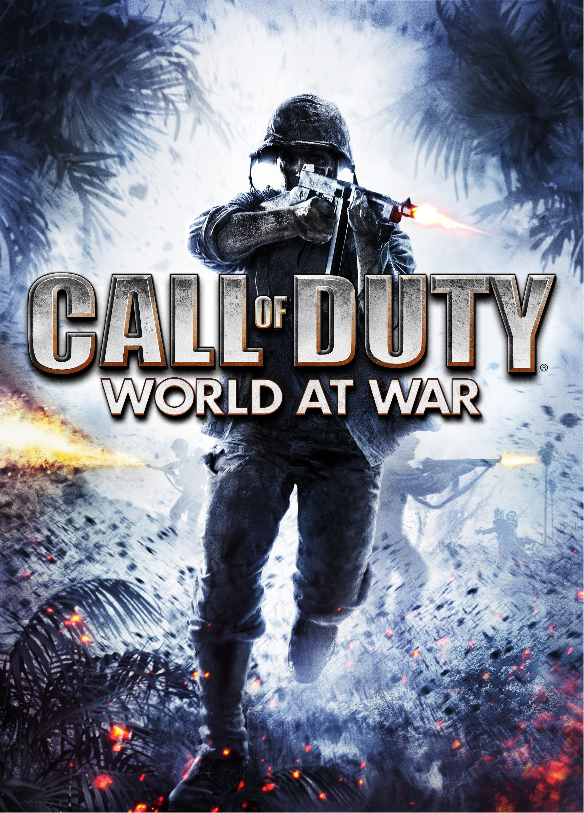
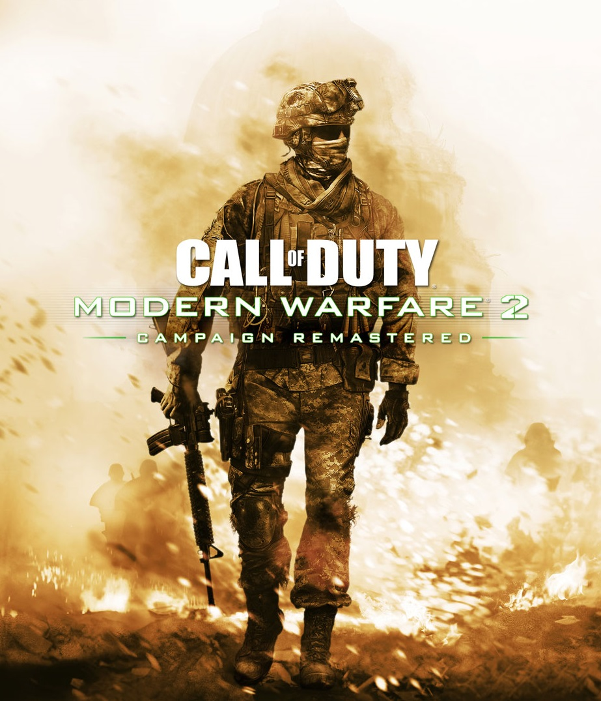
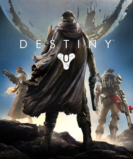

Welcome to my website
About me
My name is Damola - I am 19 years old and I enjoy playing video games and watching content to do with game son Twitch and youtube
I grew up in manchester with an older brother and younger sister. I am half Nigerian, so I also grew up with more than
one culture.
I am currently apart of the Code Nation online course where I am learning how to code in python and HTML.
I hope to become a game devoloper in the near future.

Interests in technology and coding
I have grown up playing and watching all kinds of video games. my interests in technology and coding mainly stem from game.
The front end as well as the back end of games facinate me I would love to be able to work on a successful game at some point.
I believe that my career in life should be
to do with something I have always loved.
Why I joined Code Nation
I have done computer science at both secondary school and college, however the GCSE computer science was take away in the last year
and I dropped out of college a few months before sitting the exams. I joined Code Nation as it was soemthing brought to me that
gives me the chance to catch up and learn some other things while getting actual qualifications. It's an opportunity.

My favourite games
Call of Duty
I have grown up playing the call of duty games from a very young age. It is the first multiplayer game I ever played and always
got the new one every year. I made most of my close friends from school but we spent most of the time playing
call fo duty together. My favourite part of the games is the zombies mode that was introduced in Call of duty: World at war
back in 2008. It is the main reason I buy the new games. My favourite multiplayer call of duty is Call of duty: Modern Warfare 2
and Call of duty: Black Ops 2 as they are the games I have the best memories on and could still go back and play it till this day.



Destiny
Destiny was my favourite game for years, the grinding aspect of the PVE (Player vs Environment), which was translatable to the FPS (First person shooter)
Multiplayer part was bliss to me. The constant extention with the new guns and armour to grind for through strikes and raids, as well as the pvp
itself. The raids were probably the most exciting part of the game when I new one came out, having to figure out the different mechanics to take down
the bosses and puzzles was always entertaining. The Trails of Osiris was a PvP (Player vs Player) mode that made me and my friends the most hype
as it was always competetive.

League of Legends
An online MOBA (Multiplayer Online Battle Arena) game that has been one of the most popular PC games for a long time. Everyone that plays the game, including me,
has a love hate relationship with it. It isn't my favourite game by far, however it is a fun game to play with friends and has been the game I play most
recently. My favourite champions are Pyke and Yasuo.